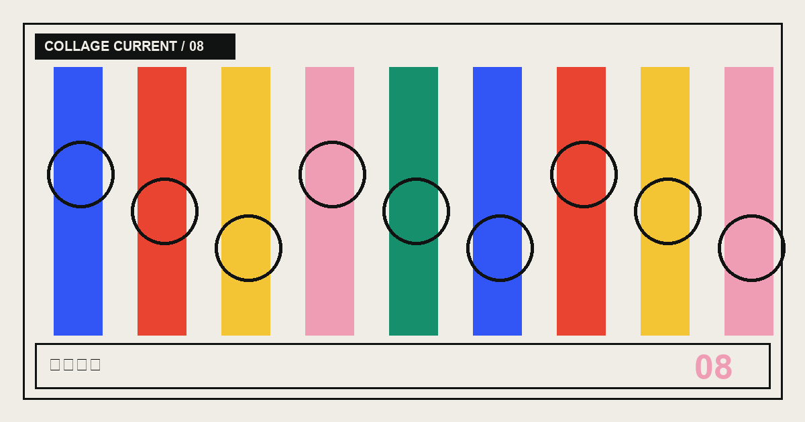

跳到主要内容CURRENT / 041~ISSUE_THEME~~ISSUE_LABEL~
CLIPPING / 08 · 标签折页
~SHOP_LABELS_TITLE~
~SHOP_LABELS_DECK~
- 作者
- ~AUTHOR_NAME~
- 阅读时间
- ~SHOP_LABELS_READING_TIME~
- 核验日期
- ~VERIFIED_DATE~
08
~SHOP_LABELS_COVER_CAPTION~~SHOP_LABELS_OPENING_TITLE~
~SHOP_LABELS_OPENING~
01 / ~SHOP_LABELS_SECTION_1_KICKER~~SHOP_LABELS_SECTION_1_TITLE~
~SHOP_LABELS_SECTION_1_BODY_1~
~SHOP_LABELS_SECTION_1_QUOTE~
~SHOP_LABELS_SECTION_1_BODY_2~
02 / ~SHOP_LABELS_SECTION_2_KICKER~~SHOP_LABELS_SECTION_2_TITLE~
~SHOP_LABELS_SECTION_2_BODY_1~
~SHOP_LABELS_SECTION_2_BODY_2~
03 / ~SHOP_LABELS_SECTION_3_KICKER~~SHOP_LABELS_SECTION_3_TITLE~
~SHOP_LABELS_SECTION_3_BODY_1~
~SHOP_LABELS_SECTION_3_BODY_2~
04 / ~SHOP_LABELS_SECTION_4_KICKER~~SHOP_LABELS_SECTION_4_TITLE~
~SHOP_LABELS_SECTION_4_BODY_1~
~SHOP_LABELS_SECTION_4_QUOTE~
~SHOP_LABELS_SECTION_4_BODY_2~